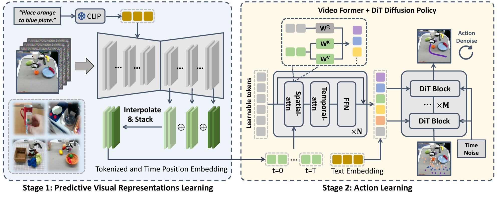

Video Prediction Policy: A Generalist Robot Policy with Predictive Visual Representations
Yucheng Hu 等 · ICML 2025 Spotlight · arXiv:2412.14803 v2 · Zotero CCSE5EX3
VPP 先把 SVD 微调成 manipulation text-guided video predictor，但部署时只做一次前向、读取各层尚未解码的时空 latent；Video Former 压缩这些 predictive visual representations，再由 DiT diffusion policy 输出动作。
§1 Introduction：为什么当前帧表征不够指导动作
多数机器人策略从图像编码器取得“现在有什么”的特征，再让动作头自己从示范中推断“接下来会怎样”。图像重建、图文对比和双帧对比预训练擅长物体与语义，却不显式表示未来运动、接触结果和任务进展；当动作数据有限时，动作头要独自补完这部分动力学。
视频 diffusion model 的内部张量天然包含时间维：它在去噪过程中同时编码当前观察与多个未来时刻。VPP 因此先把预训练视频模型微调成 manipulation video predictor，再让策略读取其内部 predictive visual representations。关键工程选择是不把未来视频完整去噪出来：部署时只执行一次高噪声前向，抓取多层时空 feature，经 Video Former 压缩后条件化 DiT 动作头。
展开原文 · 核心主张
“visual representations ... explicitly express both current and future frames”
§2 Related Work：从静态视觉预训练到隐式视频规划
DINO、R3M、VC-1 等视觉预训练主要形成当前状态表征；视频表征学习增加时间一致性，却未必显式预测任务条件未来。另一侧，UniPi、SuSIE 等生成完整未来图像再用 IDM 控制，计划可视但多步去噪昂贵；GR-1 等 joint autoregressive 模型则同时预测未来和动作，耦合更紧但训练成本更高。
VPP 的位置是“隐式 cascaded WAM”：第一阶段仍是未来预测器，第二阶段仍从未来信息恢复动作，但中间载体由 RGB rollout 换成视频模型内部 latent。它与普通 frozen video encoder 也不同——视频模型先针对文本条件 manipulation prediction 微调，使其隐特征不仅包含运动，还指向任务相关的未来。
§3 它为何比 UniPi 更快
§4 先学预测表征，再学动作

1. 注入当前图像、文本和最大噪声 future latent
视频模型只运行第一个前向步骤。
输入是什么：随机噪声，以及当前画面、语言指令或机器人状态等条件信息。噪声只是生成过程的起点，不是机器人真的要执行的动作。
这一步究竟做什么：本步骤执行“注入当前图像、文本和最大噪声 future latent”。具体来说，视频模型只运行第一个前向步骤。 这里处理的只是整条链路中的一个接口：把上一步的结果整理成下一步能够正确读取和继续计算的形式。
输出到哪里：一组比原始输入更紧凑的内部特征；它不是最终动作或画面。这个结果会交给下一步“抓取多层 predictive features”继续处理。
为什么不能省略：模型不能高效地直接在所有原始像素和长序列上推理；这一步把信息压成后续模块能处理、比较和复用的形式。
2. 抓取多层 predictive features
保留 $T\times H\times W$ 的粗未来信息。
输入是什么：来自上一步“注入当前图像、文本和最大噪声 future latent”的产物：一组比原始输入更紧凑的内部特征；它不是最终动作或画面。本步骤还会按论文设置读取当前条件、时间步或训练信号。
这一步究竟做什么：本步骤执行“抓取多层 predictive features”。具体来说，保留 $T\times H\times W$ 的粗未来信息。 这里处理的只是整条链路中的一个接口：把上一步的结果整理成下一步能够正确读取和继续计算的形式。
输出到哪里：经过本步骤处理、含义更明确的中间结果。这个结果会交给下一步“压缩跨视角时空序列”继续处理。
为什么不能省略：它承担上下两步之间的接口；缺少它，前一步产生的信息无法以正确格式或正确含义传到下一步。
3. 压缩跨视角时空序列
Video Former 生成固定数量条件 token。
输入是什么：来自上一步“抓取多层 predictive features”的产物：经过本步骤处理、含义更明确的中间结果。本步骤还会按论文设置读取当前条件、时间步或训练信号。
这一步究竟做什么：本步骤执行“压缩跨视角时空序列”。具体来说，Video Former 生成固定数量条件 token。 模型从相同起点产生候选未来，后续模块再检查这些未来是否符合条件、物理规律或动作需要。
输出到哪里：一组比原始输入更紧凑的内部特征；它不是最终动作或画面。这个结果会交给下一步“动作扩散”继续处理。
为什么不能省略：模型不能高效地直接在所有原始像素和长序列上推理；这一步把信息压成后续模块能处理、比较和复用的形式。
4. 动作扩散
DiT 从噪声恢复 action chunk，闭环高频执行。
输入是什么：来自上一步“压缩跨视角时空序列”的产物：一组比原始输入更紧凑的内部特征；它不是最终动作或画面。本步骤还会按论文设置读取当前条件、时间步或训练信号。
这一步究竟做什么：本步骤执行“动作扩散”。具体来说，DiT 从噪声恢复 action chunk，闭环高频执行。 这个动作会真正改变环境，所以系统还要读取执行后的新观测，检查模型预期与现实之间的差距。
输出到哪里：经过本步骤处理、含义更明确的中间结果。这是图中这条链路的最终产物，随后会进入真实执行、模型更新或指标评测。
为什么不能省略：它把前面得到的内部结果落实为可执行动作、可训练模型或可解释指标，完成从方法到结果的最后一步。
§5 Predictive visual representation
- $x_{t'}$
- 通常是终点噪声；第一步尚不能生成清晰视频。
- $L_m$
- 视频 U-Net/VDM 的 upsampling layer 已融合当前帧、文本和粗时空预测。
- $F_p$
- 从多层自动聚合，避免人工挑一个视觉层。
§6 Video Former 与 diffusion policy
- $Q_i$ 与 $F_{p,i}$
- 第 $i$ 个时刻的查询 token 与未来计划特征。
- $SpatAttn$
- 先在每个时刻读取相关空间区域，找出与操作对象和接触位置有关的信息。
- $TempAttn$
- 再沿时间整合各时刻查询，得到动作所需的变化顺序。
- $D_\psi$ 与 $\mathcal L_{act}$
- 动作扩散解码器根据语言和查询表示恢复干净动作 $a_0$，损失直接监督可执行序列。
动作头没有接收清晰未来帧，而是从 predictive token 推断达到该未来所需的动作；因此仍是 cascaded 结构，但 carrier 是 latent feature 而不是像素。
§7 证据与局限
§8 实验归因与复现：一次前向到底保留了什么
最小可信复现清单
- 固定输入视角、预测帧数、VDM 噪声 timestep 与抽取层集合。
- 说明 Stage 2 是否冻结 VDM，动作梯度能否回传到预测表征。
- 记录 learnable query 数量、空间/时间 attention 顺序与 token 维度。
- 同时比较最终 RGB rollout feature、一次前向 latent 和静态视觉 feature。
- 在相同动作 diffusion 步数与控制频率下测端到端延迟和闭环成功率。
VPP 的核心不是删除世界模型，而是把昂贵的显式视频 rollout 压缩为一次前向的预测表征；速度与可诊断性在这里发生交换。